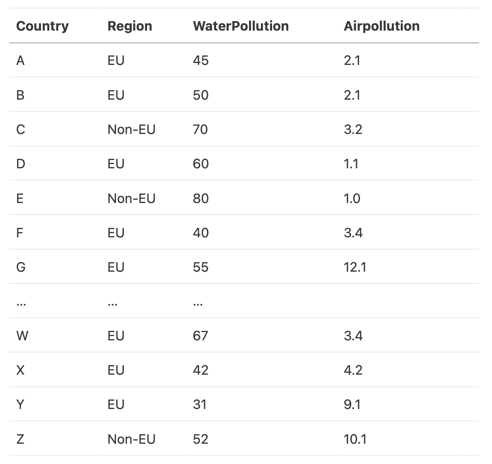

for i in range(5):
if i == 3:
continue
print(i)
A. 21
B. 27
C. 0 1 2 4 # Correct
D. None of the aboveDAFS exam type questions - solutions
MCQ - Python:
These are some examples of the types of questions you might get at the exam. This is not a full mock exam, it’s just to give you an idea of what to expect. In the real exam you will have questions specific to your language (for the Python track you will only see the python questions and for the R track you will only see the R questions).
Question 1
What does the following python code return?
Question 2
What does the following python code return?
x = 10
if x > 10:
print("Greater")
elif x == 10:
print("Equal")
else:
print("Smaller")
A. Greater
B. Equal # Correct
C. Smaller
D. ErrorMCQ - R:
Question 1
What does the following R code return?
df <- data.frame(
ID = 1:5,
Age = c(25, 30, 22, 28, 35),
Score = c(80, 90, 85, 70, 95)
)
df <- df[df$Age > 25 & df$Score > 85, ]
df <- mean(df$Age)
print(df)
A. 32.5 # Correct
B. 67
C. 29
D. ErrorQuestion 2
In R, how do you remove rows from a data frame df where the value in column X is greater than 10?
A. df <- df[df$X <= 10, ]
B. df <- subset(df, X <= 10)
C. df <- df[!(df$X > 10), ]
D. All of the above # CorrectExplain a script. There are already many online, so i only add one example here.
R
You are provided with the following R script. Explain each line of code in this script. You do not have to explain what the output it, or what a Fibonacci sequence is. The Tail function takes the last value in the vector.
generate_fibonacci <- function(limit) {
fib_sequence <- c(0, 1)
next_value <- fib_sequence[1] + fib_sequence[2]
while (next_value <= limit) {
fib_sequence <- c(fib_sequence, next_value)
next_value <- tail(fib_sequence, n = 1) + tail(fib_sequence, n = 2)[1]
}
return(fib_sequence)
}
fib_seq <- generate_fibonacci(3)
print(paste("Fibonacci sequence up to 3:", fib_seq))
# L1: Creates a function called generate_fibonacci that takes one argument: limit
# L2: Creates a vector with two values, 0 and 1
# L3: Creates a variable that is the sum of the first two elements of the vector
# L4: Creates a while loop that runs until the next_value variable exceeds limit
# L5: Updates the fib_sequence by adding the next value to it, lengthening the vector
# L6: Computes the sum of the last 2 elements of the vector (the next value)
# L7: Returns the sequence in current state
# L9: Use te function to create the sequence for a limit of 3
# L10: print out the final resultPython
You are provided with the following Python script. Explain each line of code in this script. We have a csv file with different measure of water pollution in different countries in the world. There can be multiple measures per country (countries can have multiple water bodies). The values are fictitious. Explain each line of code in this script. There is no need to compute any values, or explain/show the output.

import pandas as pd
data = pd.read_csv(“waterpollutiondata.csv”, sep = “;”)
df = pd.DataFrame(data)
res = df[df['Region'] == 'EU']
res = res.groupby('Country')['WaterPollution'].mean()
res = res[res > 50]
print(res)
#L1: Import the pandas package with the pd alias
#L2: Read the data from a csv file, the data is sep with a ","
#L3: transform the imported data into a dataframe structure so that the pandas functions can be used
#L4: Subset the df to keep only countries from the EU
#L5: Group the observations by country and compute the mean of the pollution
#L6: Keep only value higher than 50
#L7: Print out the resultsIdentify error(s)
Python
- Identify the error(s) in the script.
- Propose a solution for each error.
import pandas as pd
data = { 'Country': ['France', 'Germany', 'Netherlands', 'Italy', 'Spain'],
'Emissions' : [25, 35, 21, 45, 21]}
df = pd.DataFrame(data)
def calculate_total_emissions(dataframe):
result = sum(dataframe['Emission'])
return result
total_emissions = calculate_total_emissions(df)
print("Total emissions for EU countries:", total_emissions)1: Errors
In L6, the script refers to ‘Emission’ while the df column name is ‘Emissions’ The script is not indented.
2: Solutions
Put the correct name in L6. Indent the code properly, one tab per level of identation.
R
- Identify the error(s) in the script.
- Propose a solution for each error.
data = dataframe(“country” = c(“NL”, “BE”,”FR”,”DE”), “emission” = c(23, 32,14,14))
Data = as.matrix(data.frame(data))
Result = sum(dataframe$emission)
return sum(dataframe['Emission'])
total_emissions = calculate_total_emissions(df)
print("Total emissions for EU countries:", total_emissions)In L4: wrong reference to the column name. In L3: wrong reference to the dataframe
Write a script:
R & Python:
You are provided with a dataset containing information about a group of people. The data is in csv format. The data includes names, ages, and test scores. Your task is to write a program that classifies each person based on specific criteria. The dataset contains 3 columns: ‘Name’, ‘Age’ and ‘Score’. Classify the people in 2 categories, a first category for people with a score lower than 42, a second with people with a score higher or equal to 42. The final dataset should have 4 columns: Name, Age, Score, Category. You can decide what to call the categories. You can consider that the data has already been loaded, all required packages have been installed and loaded.
Python Solution
def classify_score(score):
if score < 42:
return "Low score"
else:
return "High score"
# Create a new column 'Category' using the function above
df["Category"] = df["Score"].apply(classify_score)
# Look at the final result
print(df)R solution:
mydata$Category <- NA # we will fill this later
# Loop over all rows
for (i in 1:nrow(mydata)) {
# Check the Score for this row
if (mydata$Score[i] < 42) {
mydata$Category[i] <- "Low score"
} else {
mydata$Category[i] <- "High score"
}
}
# Look at the final result
print(mydata)